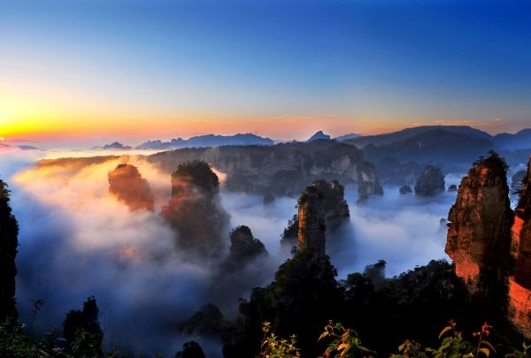

I chose this place because I love scenery, and I really wanted to go there. It's also a very popular tourist destination in China. The text placement and size were chosen to maintain the overall harmony of the website. The main colors of the page color palette are green, turquoise, light yellow, and light blue. I chose these colors because I think they are particularly beautiful and refreshing, and they perfectly match the mountainous and watery feel of the Zhangjiajie scenic area. The images I selected all correspond to the scenic spots/activities and restaurants I chose, and I also added a light yellow border to the images. The button has a classic rectangular shape. I think simplicity is best for pages about scenic spots, but I made the edges more rounded, the same as all the other images, and the color is also my theme color. The animation's image is a small hill, chosen because it echoes the location I selected.
